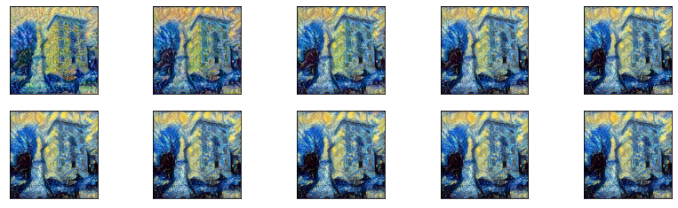

Neural Style Transfer
This post explores and reproduces the paper titled “A Neural Algorithm of Artistic Style” by Leon A. Gatys, Alexander S. Ecker and Matthias Bethge. This post is also avaiable as a Jupyter Notebook. I recommend reading the annotated paper in tandem with this post.
Table of Contents
- Motivation
- Convolutions and Representations
- Methods
- Final Code Implementation
- Experiments and Results
Motivation
Humans have a unique ability to perceive style and use that layer of experience in order to create artistic visuals. In 2015 (back when this paper was released) there was no known artificial system with similar capabilities (nowdays Generative Adversarial Networks have been proven very promising for this task). This is in contrast to other visual tasks such as object and face recognition where machines have us beat. In this paper, the authors describe a methodology that seperates content from and style for an input image. By “painting” the content of an image with the style of an artwork, the described methodology can produce unique visual experiences.
Convolutions and Representations
Convolutional neural networks (CNNs) are a class of neural networks used mostly in computer vision tasks such as object recognition and image description. In a trained deep CNN each layer detects sets of features by applying filters in a computation called Convolution. The output of a convolutional layer is a set of features or a feature map.
The researchers note that the first layers detect low-level features such as angles and lines while later layers detect increasingly complex structures. For example, a 5 layer CNN trained on object detection using random images from the internet:
| Layer Number | Detects |
|---|---|
| 1 | Angles, Edges, Lines |
| 2 | Complex shapes and patterns |
| 3 | More complex shapes and starting to detect objects |
| 4 | Detects some objects such as legs, arms, cars, clocks |
| 5 | More general object detector, multiple varitions of cars, dogs, cats, etc. |
Thus the content of the image is encoded in the last layers while the first layers are concerned with specific pixel values. In order to obtain a representation of the style of the input image the authors make use of a methodology which calculates correlations between feature maps. They found that using multi-layer feature maps had the best aesthetic result. The methodologies used will be described in the next section of this post. The key finding of this paper is that content and style representations can be seperated and that by generating an image that simultaneously matches that content and style of different images, one can essentailly paint an image in the style of another one. Although there have been previous works that seperated content from style, their methods were evaluated on low complexity images such as handwritten characters (Tenenbaum et al., 2006) (Elgammal et al., 2009). But how is it that a neural network trained for object recognition can seperate style from content?
The authors conjecture that “The explanation could be that when learning object recognition, the network has to become invariant to all image variant that preserves object identity”. In simple terms, in order to get better results, the network has to not be affected by the color of a dog but recognize the fact that a black and a white dog, are still both dogs.
Methods
In this paper the authors used the weights of the pretrained VGG network (Simonyan et al., 2015). The VGG network, created by the Visual Geometry Group of the University of Oxford, is a 19 layer deep CNN that did very well in the Image Classification task of the ImageNet competition and has 144 million parameters (ImageNet results).
Let’s outline the author’s methodology for extracting content and style from an image and then we will going through each step more thoroughly:
- Get intermidiate layer outputs for the input and generated images.
- Convert the outputs to 2D.
- Calculate the loss between the two representations.
- Calcuate and back propagate gradients (taken care by Tensorflow)
For the following code blocks one needs to install and import the following packages:
import numpy as np
from numpy.linalg import norm
from matplotlib import pyplot as plt
import PIL
from PIL import Image
import time
import IPython.display
import imageio
import tensorflow as tf
from tensorflow.keras.applications import vgg19
from tensorflow.keras.preprocessing import image as keras_image
from tensorflow.keras import Model
Step 1
The generated image will be an (224, 224, 3) array, which is the size of the input VGG input layer. It needs to be reshaped to (1, 224, 224, 3) and then passed through the function vgg19.preprocess_input() which preprocesses the image as required in order to be fed into VGG. This process is done with the following function:
def generate_random_image(shape = [224, 224, 3]):
"""
Generates a random image of a given shape and preprocesses it for usage
with the vgg19 model. The images are converted from RGB to BGR, then each color channel is
zero-centered with respect to the ImageNet dataset, without scaling.
Args:
shape: the desired shape of the output.
"""
img = tf.random.uniform(shape, minval=0, maxval=255, dtype=tf.float32)
img = tf.expand_dims(img, axis=0)
img = vgg19.preprocess_input(img)
return img
For the content image we will use this image of a Labrador and for the style image a composition by Vassily Kandinsky.


The input images still need to have the same size and properties as required by VGG. The following function will be used to load and preprocess all input images:
def load_image(path):
"""
Loads the image in path and preprocesses it according to vgg19 specifications.
The result can be fed directly to vgg19 via the model.predict(x) function.
Output is a numpy array.
Args:
path: path for the image file or url.
"""
img = imageio.imread(path)
img = Image.fromarray(img)
img = img.resize((224,224), resample=PIL.Image.NEAREST)
img = keras_image.img_to_array(img)
img = np.expand_dims(img, axis=0)
img = vgg19.preprocess_input(img)
return img
Before getting the intermidiate layer activations a Tensorflow model that used the VGG weights needs to be created. This can be done with the following line of code vgg = vgg19.VGG19(include_top=False, weights='imagenet'). As per Tensorflow best practises, when creating a custom model it is best to wrap it up in a new class (Tensorflow Guide). Thus we’ll create the “NeuralTransferModel” class which will interface with the VGG model and help us get the outputs of the intermidiate layers.
(Note: if you are wondering why the model is called vgg19 and not vgg , it’s because Tensorflow offers smaller versions of the model such as vgg16)
class NeuralTransferModel(tf.keras.Model):
""" Created a model that returns intermidiate layer outsputs from the vgg19
model. """
def __init__(self, content_layers, style_layers):
""" Args:
content_layers (list of strings): list of intermidiate layers to be used for
content loss calculations.
style_layers (list of strings): list of intermidiate layers to be used for
style loss calculations.
The layers names must be as shown by
vgg19.VGG19(include_top=False, weights='imagenet').summary().
"""
super(NeuralTransferModel, self).__init__()
self.content_layers = content_layers
self.num_content_layers = len(content_layers)
self.style_layers = style_layers
self.num_style_layers = len(style_layers)
self.vgg = vgg19.VGG19(include_top=False, weights='imagenet')
self.vgg.trainable = False
self.vgg_output_layers = get_vgg_layers(self.vgg, content_layers + style_layers)
self.model = Model(inputs=[self.vgg.input], outputs=self.vgg_output_layers)
self.model.trainable = False
The NeuralTransferModel accepts two arguments at initialization, content_layers and style_layers. These are both lists of layer names to be used for loss calculations. The author’s found that the most visually appealing results were created by taking into account multiple layers for style loss calculations. On the other hand, for content loss calculations the authors used only one layer. Thus keep in mind that in the experiments presented in this blog post, only one layer will be used for content while multiple for style.
The lines:
self.vgg = vgg19.VGG19(include_top=False, weights='imagenet')
self.vgg.trainable = False
load the vgg19 model and set it’s weight to be non-trainable. This is important because we do not want to train the model, the only parameter we want the gradients to affect is the generated (random at first) image.
After loading VGG, the following lines obtain the layer objects using the function get_vgg_layers and create a new custom Model that has the same input as VGG but a different output. The output of this custom model is the activations of the intermidiate layers selected in content_layers and style_layers. Finally set the weights to be non-trainable.
self.vgg_output_layers = get_vgg_layers(self.vgg, content_layers + style_layers)
self.model = Model(inputs=[self.vgg.input], outputs=self.vgg_output_layers)
self.model.trainable = False
The code for the get_vgg_layers function is:
def get_vgg_layers(vgg, layers):
return [vgg.get_layer(layer).output for layer in layers]
It uses the vgg object passed as the first argument to get a list of layer objects from the layers list which contains layer names as strings.
A call function also has to be added to the model in order to allow it to be called and return results.
def call(self, input):
""" Calls the model with input. Returns a dictionary containing two keys.
The content key contains the vectorized layer outputs of the given content layers.
The style key contains the gram matrices of the vectorized layer outputs
of the given style layers. Each key in both dictionaries is a layer_name, layer_output pair.
The layer_names are given in model initialization.
Args:
input: a tf.variable of shape at least (224, 224) with three channels.
It needs to be preprocessed by the vgg19.preprocess_input function."""
outputs = self.model(input)
content_outputs, style_outputs = (outputs[:self.num_content_layers],
outputs[self.num_content_layers:])
content_outputs_vectors = [vectorize_layer_output(content_output)
for content_output in content_outputs]
style_outputs_grams = [gram_matrix(vectorize_layer_output(style_output))
for style_output in style_outputs]
content_dict = {content_name:value
for content_name, value
in zip(self.content_layers, content_outputs_vectors)}
style_dict = {style_name:value
for style_name, value
in zip(self.style_layers, style_outputs_grams)}
return {'content':content_dict, 'style':style_dict}
Calling a NeuralTransferModel object returns vectorized layer representations that are ready to be used for loss calculations which will talk about later on.
So far so good, let’s take a breather and recap! Up to this point a custom model has been created that gets a - properly preprocessed - image as input and outputs a list of layer activations.
Step 2
In order to make the activation arrays easier to work with, we’ll convert the 4D arrays to 2D. The output of a CNN layer has the shape (m, h, w, f), where m is the number of examples, h the height of the image, w the width of the image and f the number of filters in the layer (sometimes refered to as depth). For example, 2 images are passed through the first layer of VGG which has 64 filters, the output would have shape (2, 224, 224, 64). In the present case, only one image is passed through the model each time, so m is always 1. The (1, 224, 224, 64) array has to be reshaped to (64, 224 * 224), each row in the result represents a filter. This operation is implemented with the following code:
def vectorize_layer_output(x):
""" Converts the output of a layer with shape (m, h, w, f) to (f, h*w).
Args:
x: numpy array or tensor with shape (m, h, w, f)."""
_, h, w, f = x.shape
return tf.transpose(tf.reshape(tf.squeeze(x), [h*w, f]))
Step 3
Okay, this is the fun part! Let’s talk loss functions.
Content Loss
Content loss measures how different is the generated image’s content from the given content. Style loss does the same but with a different mechanism. For content loss the authors use the squared-error loss between the two feature representations:
The derivative of which is:
But don’t worry about that, Tensorflow will take care of the backpropagation procedure. Only the forward propagation has to be implemented. The and indices correspond to rows and columns in the 2D layer activation. Remember that the vectorize_layer_output is applied before doing any loss calculations.
(Note: In the original equations the authors used and instead of and , but using C from “content” and G from “generated” is much more intuitive.)
Style Loss
The style loss plays the same role as the content loss, that is it measures how different is the generated image’s style from the given style. In contrast with the Content Loss, Style loss uses representations from different layers. In order to derive the final equation for style loss we need to discuss the concept of a Gram Matrix.
A Gram Matrix is the dot product of a matrix with itself transposed. This operation essentially outputs a matrix in which each element expresses the correlation of row with row of the original matrix. By transforming a layer’s vectorized representations into a Gram Matrix we can measure the similarity between the responses of different filters in a given layer. The following function computes a Gram Matrix:
def gram_matrix(x):
""" Computes the gram matrix of input x.
Args:
x: 2D numpy array or tensor. """
return tf.tensordot(x, tf.transpose(x), axes = 1)
The resulting matrix is then used in the following equation which calculates the mean-squared distance between the elements of the generated and style images,
where are the number of filters (or rows) and number of columns () in the vectorized representations respectively. is the element in the th column of the th row of the Gram Matrix of the generated image, while is the corresponding element of the style image. Finally, is the style loss for layer .
Then the total style loss is a weighted sum of different layers:
Fortunately, the gradient of the style loss is taken care by Tensorflow, only the forward pass needs to be implemented. It is important to note that in the authors’ (and our) experiments the factor is always equal to one divided by .
Total Loss
Content and style losses are combined for the total loss calculation between a generated image and the content and style images as such:
are hyperparaterms that the authors use in order to make the model focus more one content of style.
Final Code Implementation
So far the author’s methodology has been covered, the only missing pieces are a couple of python functions. Specifically, one function will (de)process the generated image in order to render it as an actuall image. This is necessary because all the input image have been preprocessesed in order to be used with VGG, in turn the generated image needs to be deprocessed.
def tensor_to_image(tensor):
img = tensor.numpy()
img = np.squeeze(img)
mean = [103.939, 116.779, 123.68]
img[:, :, 0] += mean[0]
img[:, :, 1] += mean[1]
img[:, :, 2] += mean[2]
img = img[..., ::-1]
img = (img + np.abs(img.min()))
img /= img.max()
img *= 255
return img.astype(np.uint8)
Additionally the following functions call the helper functions, defined in Step 3 of the Methods section, in order to calculate the total loss.
def content_loss(generated_image_content_output,
content_image_content_output,
weights):
"""
Returns the content loss of content and generated. It is calculated by taking the half of the euclidean distance
between generated and content.
"""
assert len(generated_image_content_output) == len(weights)
assert len(content_image_content_output) == len(weights)
i = 0
t = 0
for k,v in generated_image_content_output.items():
t += (tf.reduce_sum((generated_image_content_output[k] - content_image_content_output[k]) ** 2) / 2) * weights[i]
i+=1
return t
def style_loss(generated_image_style_output,
style_image_style_output,
weights):
"""
Returns the weighted sum of the style_loss_layer for each layer
Args:
styles: list of layer outputs.
generated: list of layer outputs. Same layers as styles.
weights: list of weights.
"""
assert len(generated_image_style_output) == len(weights)
assert len(style_image_style_output) == len(weights)
i = 0
t = 0
for k,v in generated_image_style_output.items():
N, M = style_image_style_output[k].shape
t += (tf.reduce_sum((generated_image_style_output[k] - style_image_style_output[k]) ** 2) / (4 * N**2 * M**2)) * weights[i]
i += 1
return t
def total_loss(content_image_content_output,
style_image_style_output,
generated_image_ouputs,
weights, alpha, beta):
"""
returns the weighted sum of the content and style losses.
Args:
content_image_content_output: layer output when passed the content image.
style_image_style_output: layer outputs when passed the style image.
generated_image_ouputs: layer outputs when passed the generated image.
weights: dict containting 'c_w': list of weights for content layers,
and 's_w': list of weights for the style layers.
aplha: weight for the content loss.
beta: wieght for the style loss.
"""
cl = content_loss(generated_image_ouputs['content'],
content_image_content_output,
weights['c_w'])
sl = style_loss(generated_image_ouputs['style'],
style_image_style_output,
weights['s_w'])
return cl, sl, alpha * cl + beta * sl
The final piece of the puzzle is the training function. The following function runs the NeuralTransferModel on the content, style and generated images. Then, total_loss calculates the loss which is used to calcuate the gradients. Lastly, the generated image is updated with the gradients in mind. Before ending the training step, a clip operation is applied on all elements of the generated image in order to keep the pixel values between acceptable limits.
@tf.function
def train(content_img, style_img, generated_img_var):
norm_means = np.array([103.939, 116.779, 123.68])
min_vals = -norm_means
max_vals = 255 - norm_means
with tf.GradientTape() as tape:
content_image_content_output = model(content_img)['content']
style_image_style_output = model(style_img)['style']
generated_image_ouputs = model(generated_img_var)
cl, sl, tl = total_loss(content_image_content_output,
style_image_style_output,
generated_image_ouputs,
{'c_w': [1], 's_w': [0.2]*5},
alpha = 1, beta = 1000)
grad = tape.gradient(tl, generated_img_var)
opt.apply_gradients([(grad, generated_img_var)])
clipped = tf.clip_by_value(generated_img_var, min_vals, max_vals)
generated_img_var.assign(clipped)
return cl, sl, tl
Experiments and Results
Labrador
The first experiment we are going to run is on the labrador and a composition by Vassily Kandinsky that were mentioned on Step 1.
(Note: all experiments were run with a GPU runtime on Google Colab)
# define layer outputs
content_layers = ['block4_conv2']
style_layers = ['block1_conv1', 'block2_conv1', 'block3_conv1', 'block4_conv1', 'block5_conv1']
# create a model
model = NeuralTransferModel(content_layers, style_layers)
# create images
content_img = load_image("https://spirosbax.com/assets/images/neural-style-transfer/YellowLabradorLooking_new.jpg")
style_img = load_image("https://spirosbax.com/assets/images/neural-style-transfer/Vassily_Kandinsky,_1913_-_Composition_7.jpg")
# generated_img = generate_random_image()
# set the generated image to the content image. This significantly reduces computation time.
generated_img_var = tf.Variable(content_img)
opt = tf.optimizers.Adam(learning_rate=5, beta_1=0.99, epsilon=1e-1)
epochs = 10
steps_per_epoch = 100
# For displaying
num_rows = 2
num_cols = 5
imgs = []
losses = np.zeros((epochs * steps_per_epoch, 3))
global_start = time.time()
for epoch in range(epochs):
start_time = time.time()
for e_step in range(steps_per_epoch):
cl, sl, tl = train(content_img, style_img, generated_img_var)
losses[e_step + epoch * steps_per_epoch, 0:3] = [cl.numpy(), sl.numpy(), tl.numpy()]
end_time = time.time()
# Use the .numpy() method to get the concrete numpy array
plot_img = tensor_to_image(generated_img_var)
imgs.append(plot_img)
IPython.display.clear_output(wait=True)
IPython.display.display_png(Image.fromarray(plot_img))
print(f'Epoch: {epoch}')
print('Total loss: {:.4e}, '
'Epoch time: {:.4f}s'.format(tl, time.time() - start_time))
print('Total time: {:.4f}s'.format(time.time() - global_start))
IPython.display.clear_output(wait=True)
plt.figure(figsize=(14,4))
for i,img in enumerate(imgs):
plt.subplot(num_rows,num_cols,i+1)
plt.imshow(img)
plt.xticks([])
plt.yticks([])
print("Total time: {:.1f}".format(time.time() - global_start))
For each of the 10 epochs:
The result is:
IPython.display.display_png(Image.fromarray(imgs[-1]))
You can try to experiment with the hyperparameters. In their experiments the authors keep the ratio to 0.001 or 0.0001, the former is what we are using. Different hyperparameters output different images. For example, the following image was generated with , , learning rate=2, epochs = 20, steps per epoch = 800:
Building
For the second experiment let’s paint the picture of this building:
with the style of Van Gogh’s “Starry Night” painting:

The generated image for each of the 10 epochs:

The result is: